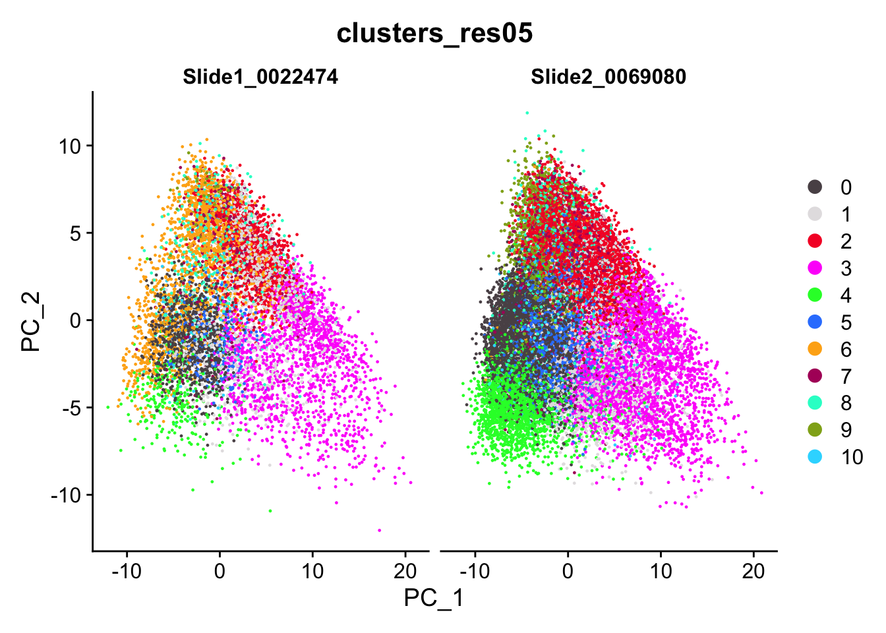
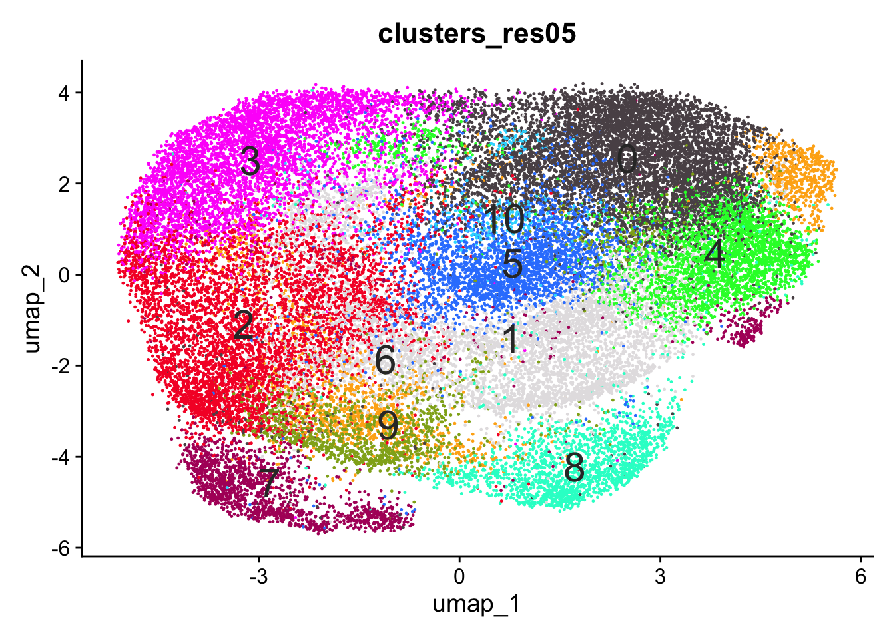
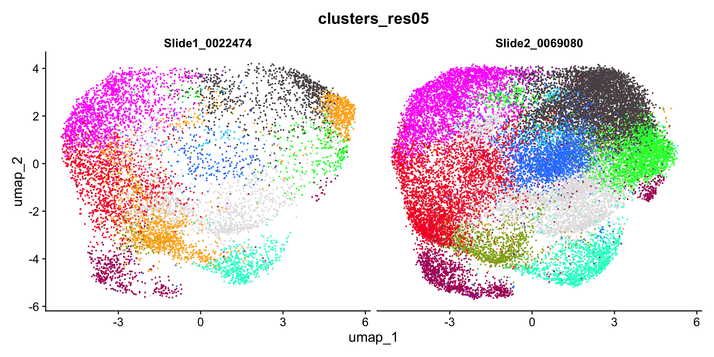
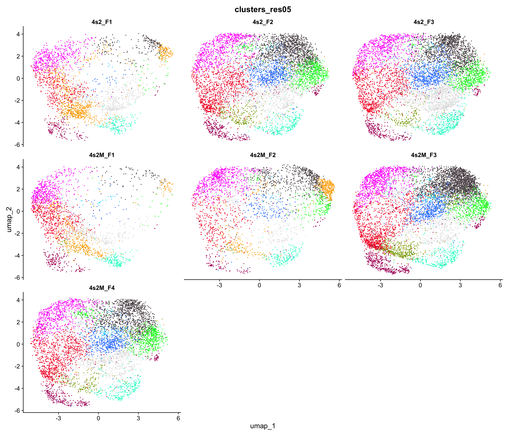
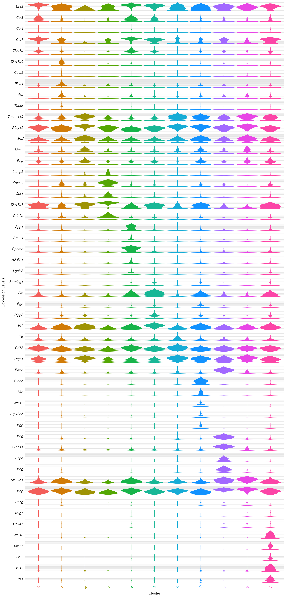

seurat_clusters == 2 from the Louvain-0.5 clean object
Published
May 24, 2026
Why this notebook
The clean SpaNorm Louvain-0.5 cluster 2 (data/20260516_microglia_switch_spanorm_p025_clean.qs2) holds the entire microglia population and carries Cx3cr1 / P2ry12 / Tmem119 alongside Cst7 / Trem2 / Cd14 in its top-10, so it mixes homeostatic and DAM states in one cluster. The clean-0.7 global build splits them globally (cluster 12 homeostatic, cluster 6 DAM), but a targeted re-fit on microglia alone is the cleaner way to resolve finer microglia states (homeostatic, IRM intermediate, DAM Stage-1 Trem2-dependent, DAM Stage-2 Trem2-independent) before the E4-vs-E2 DE.
Here, we subset to cluster 2, re-fit SpaNorm per sample on the microglia counts, then re-run ScaleData / PCA(30) / FindNeighbors / Louvain / UMAP, look at PCA balance per slide, UMAP per slide and per sample, FindAllMarkers, and a fiddle violin panel; first at Louvain 0.5 and then at 0.3 to bracket the resolution from both sides, matching the structure of 20260516_SpaNorm_samplep025_clean.qmd.
Normalization is re-fit on the microglia subset. SpaNorm learns three things from the data: a per-cell library-size correction, a per-section baseline expression level, and a smooth spatial component for how expression varies across the tissue. In the whole-brain fit, the per-section baseline is dominated by the most abundant cell types (oligodendrocytes and neurons); microglia contribute too few cells to shift it.
When we subset to microglia and re-fit, all three terms are recomputed from microglia counts only. The per-section baseline now tracks microglia abundance and microglia spatial density. Variation between microglia states (DAM versus homeostatic, interferon-responsive microglia, proliferating Mki67+ cells, plaque-proximal gradients) was a tiny slice of the global variance; in the re-fit it becomes the dominant signal in the PCA. The cost is that the microglia SpaNorm matrix is no longer comparable to the whole-brain object, so between-cell-type contrasts are lost.
The trade-off is sparsity. Per-section microglia counts are ~7k for the complete sections and ~3.5k for the partial 4s2M_F2 section, which is sparse but should still support the default df.tps = 6 thin-plate splines.
Bibliography:
Keren-Shaul et al., “A unique microglia type associated with restricting development of Alzheimer’s disease,” Cell, 2017. DOI: 10.1016/j.cell.2017.05.018.
Salim et al., “SpaNorm: spatially-aware normalization for spatial transcriptomics data,” Genome Biology, 2025. DOI: 10.1186/s13059-025-03565-y.
# Seurat v5 holds the microglia subset with its re-fit SpaNorm assay.library(Seurat)library(tidyverse)# qs2 reads the multi-GB checkpoint roughly 10x faster than saveRDS.library(qs2)library(fs)# SpaNorm is re-fit per sample on the microglia counts (Salim, Genome Biology, 2025).library(SpaNorm)# SpatialExperiment is the native input class for SpaNorm; we build one per sample.library(SpatialExperiment)# scCustomize only contributes its categorical palette helper for the UMAP plots.library(scCustomize)# kableExtra renders the per-cluster top-marker table inside a scroll box.library(kableExtra)# Source the shared helper functions; fiddle() draws the per-cluster violin panel.source("R/20260514-helper_functions.R")# Seed Louvain and any other stochastic step so cluster labels stay stable across renders.set.seed(1)mg <-qs_read("data/20260517_microglia_subcluster.qs2")
Build the microglia subset (cluster 2, re-fit SpaNorm per sample, then PCA / SNN / UMAP)
Code
# eval:false because this is the one-off build; every later render reloads the checkpoint above.# Sample / slide / condition manifest; same seven samples as the parent build.samples <-tribble(~sample_id, ~slide, ~condition,"4s2_F1", "Slide1_0022474", "control","4s2M_F1", "Slide1_0022474", "switched","4s2M_F2", "Slide1_0022474", "switched","4s2_F2", "Slide2_0069080", "control","4s2_F3", "Slide2_0069080", "control","4s2M_F3", "Slide2_0069080", "switched","4s2M_F4", "Slide2_0069080", "switched")# Load the clean SpaNorm object. seurat_clusters in the saved checkpoint are the Louvain-0.5 labels;# cluster 2 is the full microglia population (Cx3cr1 / P2ry12 / Tmem119 / Cst7 / Trem2 / Cd14).xen <-qs_read("data/20260516_microglia_switch_spanorm_p025_clean.qs2")mg <-subset(xen, subset = seurat_clusters =="2")# Drop the parent SpaNorm assay, PCA / UMAP / SNN and seurat_clusters before re-fitting SpaNorm on# microglia only. The Xenium raw counts assay is what feeds the new per-sample SpaNorm fits.# DefaultAssay must move to Xenium first; DietSeurat refuses to drop the currently-default assay.DefaultAssay(mg) <-"Xenium"mg <-DietSeurat(mg, assays ="Xenium", dimreducs =NULL, graphs =NULL)# Literal slide -> FOV map; the merge of the two LoadXenium slides kept the FOVs as fov / fov.2.slide_to_fov <-c(Slide1_0022474 ="fov", Slide2_0069080 ="fov.2")fov_lookup <-set_names(slide_to_fov[samples$slide], samples$sample_id)# Per-sample SpaNorm; same helper structure as the parent build, only the input object changes.spanorm_one_sample <-function(s, mg, fov_lookup) {# One tissue section at a time; SpaNorm's spatial smoothness assumption is per section. mg_s <-subset(mg, subset = sample_id == s)# Centroids from the slide FOV; filter to microglia cells that survived the per-sample subset. coords <-GetTissueCoordinates(mg_s, image = fov_lookup[[s]]) |>filter(cell %in%Cells(mg_s))# Hand SpaNorm raw microglia counts plus the 2D centroids; ~7k cells per complete section,# ~3.5k for the partial 4s2M_F2 (still enough to support df.tps = 6). spe <-SpatialExperiment(assays =list(counts =GetAssayData(mg_s, assay ="Xenium", layer ="counts")),spatialCoords =as.matrix(coords[, c("x", "y")]))# sample.p = 0.25 and df.tps = 6 held identical to the parent SpaNorm build for like-for-like comparison. spe <-SpaNorm(spe,sample.p =0.25,df.tps =6,adj.method ="auto",backend ="auto",verbose =TRUE) out <- SummarizedExperiment::assay(spe, "logcounts")colnames(out) <-Cells(mg_s) out}# Run SpaNorm on each of the seven samples; map keeps the per-sample matrices named for the reduce step.norm_list <-map(samples$sample_id, spanorm_one_sample,mg = mg, fov_lookup = fov_lookup) |>set_names(samples$sample_id)# Bind per-sample matrices into one wide normalized matrix and reorder to the merged object's cell order.# Qualify reduce() because SpatialExperiment loads IRanges, whose reduce() masks purrr::reduce.norm_mat <- purrr::reduce(norm_list, cbind)norm_mat <- norm_mat[, Cells(mg)]# Attach as the new SpaNorm assay on the microglia object; CreateAssay5Object avoids the# "counts layer not present" warning that CreateAssayObject (v3) triggers inside a v5 object.mg[["SpaNorm"]] <-CreateAssay5Object(data = norm_mat)DefaultAssay(mg) <-"SpaNorm"# All 480 panel genes stay as variable features; the targeted panel is small enough that# off-microglia genes contribute nothing to the microglia PCs anyway, and FindVariableFeatures("vst")# does not work on a v5 assay that carries only the data layer.VariableFeatures(mg) <-rownames(mg)# A custom v5 assay carrying only the data layer needs an explicit ScaleData before RunPCA.mg <-ScaleData(mg, verbose =FALSE)# Default npcs = 50 is fine; we keep 30 PCs to match the parent build, even though microglia alone# almost certainly need fewer informative PCs (most loadings will collapse to noise after PC ~10).mg <-RunPCA(mg, npcs =30, verbose =FALSE)# Build the SNN graph once, then run Louvain at both resolutions inside the build.# Each FindClusters call overwrites seurat_clusters and Idents(mg), so we stash the# result of each call into a named metadata column to keep both label sets available# on the saved object without having to re-run FindClusters at render time.mg <-FindNeighbors(mg, reduction ="pca", dims =1:30, verbose =FALSE)mg <-FindClusters(mg, resolution =0.5, algorithm =1, verbose =FALSE)mg$clusters_res05 <- mg$seurat_clustersmg <-FindClusters(mg, resolution =0.3, algorithm =1, verbose =FALSE)mg$clusters_res03 <- mg$seurat_clustersmg <-RunUMAP(mg, reduction ="pca", dims =1:30, verbose =FALSE)qs_save(mg, "data/20260517_microglia_subcluster.qs2")
PCA split by slide
Code
# Palette sized to the Louvain-0.5 sub-cluster count; this section uses the clusters_res05 column.colorines <-scCustomize_Palette(num_groups =n_distinct(mg$clusters_res05), ggplot_default_colors =FALSE)
Code
# Split by slide so any slide-driven sub-structure inside microglia shows up before downstream DE.PCAPlot(mg, group.by ="clusters_res05", split.by ="slide", cols = colorines)

Result. PC1/PC2 envelopes match across slides in shape and span, but one cluster (the oligodendrocyte-contamination cluster, see UMAP-per-slide below) sits at different density on each slide. The PCA itself is fine; the slide-difference signal lives in cluster density not in PC-coordinate range.
UMAP
Code
# label = TRUE prints the sub-cluster id inside each island so the marker panels below stay legible.DimPlot(mg, group.by ="clusters_res05", cols = colorines, label =TRUE, label.size =8, label.color ="grey20") +NoLegend()

Result. 11 sub-clusters at Louvain 0.5. Five of them are true microglia states (0 DAM Stage-1 with Lyz2 / Cst7 / Ccl3 / Lpl; 4 DAM Stage-2 with Spp1 / Gpnmb / H2-Eb1 / H2-Ab1 / Cd74 / Itgax / Lgals3, antigen-presenting flavor; 2 homeostatic with Tmem119 / P2ry12 / Maf / Selplg; 6 low-FC homeostatic with mild Ttr contamination; 10 IRM + proliferating with Cxcl10 FC 6.83, Mki67 5.03, Ifit1 / Ifit2, Ccl2 / Ccl12) and six are doublet / segmentation-contamination clusters of neighboring cell types (1 inhibitory neuron contamination, 3 excitatory neuron contamination, 5 reactive astrocyte contamination, 7 vascular contamination, 8 oligodendrocyte contamination, 9 multi-lineage low-specificity). The high contamination fraction is consistent with microglia being a small cell-type population (~5 % of brain cells) prone to spatial overlap with denser neighbors at segmentation boundaries. The custom APOE probes rs429358-WT-228 and rs7412-ALT-226 appear inside the DAM Stage-2 (4) and low-FC homeostatic (6) clusters respectively, which is exactly where the E4-vs-E2 contrast will need to live.
Per slide
Code
# Side-by-side UMAPs per slide; failure mode is any sub-cluster that lives on only one slide.DimPlot(mg, group.by ="clusters_res05", split.by ="slide", cols = colorines) +NoLegend()

Result. A visible slide effect at 0.5: one or more contamination clusters (most prominently the oligodendrocyte-contamination cluster 8 and the multi-lineage cluster 9) sit at clearly different densities on Slide1 vs Slide2. The five true microglia states reproduce on both slides at matched densities. This is the reason we promote the 0.3 decomposition (below) for the downstream DE: dropping resolution merges those slide-imbalanced contamination clusters into broader categories that balance across slides.
Per sample
Code
# Per-sample facets; 4s2M_F2 (partial section) still expected to contribute fewer microglia than the others.DimPlot(mg, group.by ="clusters_res05", split.by ="sample_id", ncol =3, cols = colorines) +NoLegend()

Result. All six complete sections (4s2_F1, F2, F3 and 4s2M_F1, F3, F4) contribute to every microglia sub-cluster. 4s2M_F2 partial-section is sparser as expected, but its microglia land in the shared basins. The slide imbalance noted above is not a single-sample effect; the contamination clusters that are slide-imbalanced are imbalanced across both slides’ samples symmetrically.
Find all markers
Code
# devtools::install_github('immunogenomics/presto')# presto gives a far faster Wilcoxon Rank Sum implementation than Seurat's default.library(presto)# FindAllMarkers needs cluster identities as the active Idents().Idents(mg) <-"clusters_res05"microglia_markers <-FindAllMarkers(mg, only.pos =TRUE, densify =TRUE)write_csv(microglia_markers, file ="results/20260517-find_all_markers_microglia_subcluster_res05.csv")
Code
# Reload the cached marker table so the table chunk renders without rerunning FindAllMarkers.microglia_markers <-read_csv("results/20260517-find_all_markers_microglia_subcluster_res05.csv")# Top 10 markers per sub-cluster, sorted by avg_log2FC inside each cluster.microglia_markers <- microglia_markers |>select(cluster, gene, avg_log2FC, p_val_adj) |>group_by(cluster) |>arrange(desc(avg_log2FC), .by_group =TRUE)kbl(microglia_markers |>slice_head(n =10)) |>kable_styling("striped") |>scroll_box(height ="500px")
cluster
gene
avg_log2FC
p_val_adj
0
Lyz2
1.5513547
0.0000000
0
Ccl3
1.4864927
0.0000000
0
Ccl4
1.4407289
0.0000000
0
Cst7
1.3904189
0.0000000
0
Clec7a
1.1803184
0.0000000
0
Pdgfra
1.1789816
0.0000000
0
Ctsb
1.0903694
0.0000000
0
Gusb
1.0777447
0.0000000
0
Hexa
1.0715684
0.0000000
0
Lpl
1.0360528
0.0000000
1
Slc17a6
3.7270491
0.0000000
1
Calb2
3.2907109
0.0000000
1
Plcb4
2.9744419
0.0000000
1
Agt
2.6208430
0.0000000
1
Tunar
2.3991251
0.0000000
1
Tac1
2.0163127
0.0000000
1
Pvalb
1.9972309
0.0000000
1
Nts
1.7404812
0.0000000
1
Pthlh
1.6840825
0.0000000
1
Sst
1.6066454
0.0000000
2
Tmem119
1.3617746
0.0000000
2
P2ry12
1.3308430
0.0000000
2
Maf
1.2265689
0.0000000
2
Ltc4s
1.1501441
0.0000000
2
Pnp
1.1181876
0.0000000
2
Htra1
1.1124109
0.0000000
2
Vip
1.1046611
0.0000000
2
Selplg
1.0564912
0.0000000
2
Adcy5
1.0350096
0.0000000
2
Ccl5
1.0212545
0.0012012
3
Lamp5
3.2415682
0.0000000
3
Opcml
2.8993654
0.0000000
3
Cnr1
2.8210409
0.0000000
3
Slc17a7
2.8206953
0.0000000
3
Grin2b
2.7413310
0.0000000
3
Grin2a
2.7254696
0.0000000
3
Dgat2
2.6881861
0.0000000
3
Fezf2
2.6375681
0.0000000
3
Egr1
2.5217199
0.0000000
3
Hmgcr
2.4739193
0.0000000
4
Spp1
4.4755854
0.0000000
4
Apoc4
3.8894349
0.0000000
4
Gpnmb
3.7116672
0.0000000
4
H2-Eb1
3.5924091
0.0000000
4
Lgals3
2.8817666
0.0000000
4
H2-Ab1
2.6879061
0.0000000
4
Pf4
2.6249619
0.0000000
4
rs429358-WT-228
2.4910753
0.0000000
4
Cd74
2.4392522
0.0000000
4
Itgax
2.4348194
0.0000000
5
Serping1
2.4012028
0.0000000
5
Vim
2.2411088
0.0000000
5
Bgn
2.1554801
0.0000000
5
Plpp3
1.9193544
0.0000000
5
Mt2
1.8956585
0.0000000
5
Aqp4
1.8420674
0.0000000
5
Mt1
1.8020638
0.0000000
5
Serpina3n
1.7330842
0.0000000
5
Gstm1
1.6805580
0.0000000
5
Lgals1
1.6588245
0.0000000
6
Ttr
1.9584188
0.0000000
6
Tmem119
0.9201155
0.0000000
6
Cd68
0.8782391
0.0000000
6
Ptgs1
0.8660369
0.0000000
6
Ermn
0.7923961
0.0000000
6
Gpr34
0.7810031
0.0000000
6
P2ry12
0.7460278
0.0000000
6
rs7412-ALT-226:T
0.7432333
0.0024161
6
Mertk
0.7363492
0.0000000
6
Apod
0.7272920
0.0000000
7
Cldn5
5.1467240
0.0000000
7
Vtn
4.6958528
0.0000000
7
Cxcl12
4.6432413
0.0000000
7
Atp13a5
4.0297471
0.0000000
7
Mgp
3.8794382
0.0000000
7
Emcn
3.7543470
0.0000000
7
Kcnj8
3.4086263
0.0000000
7
Klf4
3.0194579
0.0000000
7
Flt1
3.0025662
0.0000000
7
Bgn
2.9786413
0.0000000
8
Mog
5.4763799
0.0000000
8
Cldn11
5.1946144
0.0000000
8
Aspa
5.1045564
0.0000000
8
Mag
5.0093622
0.0000000
8
Ermn
4.7581790
0.0000000
8
Apod
4.6137350
0.0000000
8
Pllp
4.0415345
0.0000000
8
Ptgds
3.3807445
0.0000000
8
Gatm
3.1156408
0.0000000
8
Plin4
2.4399254
0.0000000
9
Slc32a1
2.2346447
0.0000000
9
Mbp
2.0532130
0.0000000
9
Sncg
1.7559633
0.0000000
9
Nkg7
1.6391278
0.0000000
9
Cd247
1.6075756
0.0000000
9
Ccdc153
1.3933186
0.0000000
9
G6pd2
1.3531318
0.0000000
9
Ms4a4b
1.3244410
0.0000000
9
Tmem212
1.2729363
0.0000000
9
Cpt1b
1.2407214
0.0000000
10
Cxcl10
6.8276683
0.0000000
10
Mki67
5.0290413
0.0000000
10
Ccl2
5.0110120
0.0000000
10
Ccl12
4.6878083
0.0000000
10
Ifit1
4.5505866
0.0000000
10
Ifit2
4.2660757
0.0000000
10
Ccl5
3.1979365
0.0000000
10
Ifitm3
3.1372622
0.0000000
10
Hmgb2
2.8528536
0.0000000
10
Plac8
2.7324742
0.0000000
Code
# Top 5 markers per sub-cluster feed fiddle(); the SpaNorm assay carries the log-scale normalized values.top_5_genes_microglia <- microglia_markers |>slice_head(n =5) |>pull(gene) |>unique()fiddle(mg,genes_of_interest = top_5_genes_microglia,classification_col ="clusters_res05",assay ="SpaNorm")

Reclustering at lower Louvain resolution (0.3)
The 0.5 sub-clustering already produced a non-trivial microglia decomposition; here we test the opposite direction. Lowering Louvain to 0.3 on the same microglia PCA / SNN graph collapses neighboring sub-clusters and shows which sub-states are most robust. If the 0.5 split between homeostatic and DAM-like cells survives at 0.3, that boundary is the load-bearing one for the E4-vs-E2 DE; if 0.3 merges all microglia into one or two macro-clusters, the finer 0.5 sub-clusters are likely transitional or noise-driven rather than canonical Keren-Shaul (Cell, 2017) states. The 0.3 labels are already written into mg$clusters_res03 by the build chunk above, so we just re-color the plots and re-derive markers from that column.
Result. 7 sub-clusters at Louvain 0.3, collapsed from the 11 sub-clusters at 0.5. Three are true microglia states: cluster 0 (consolidated DAM, merging the 0.5 Stage-1 / Stage-2 pair: Spp1 / Cst7 / Gpnmb / H2-Eb1 / Lyz2 / Cd74 / Ccl3 / Lpl / Itgax / Lgals3), cluster 1 (consolidated homeostatic, merging the two 0.5 homeostatic clusters: Tmem119 / P2ry12 / Ptgs1 / Maf / Lpcat2 / Ltc4s), and cluster 6 (IRM + proliferating, unchanged from the 0.5 build’s cluster 10: Cxcl10 FC 6.83, Mki67 5.10, Ifit1 / Ifit2, Ccl2 / Ccl12, Plac8). Four are contamination clusters (2 excitatory neuron, 3 inhibitory + astrocyte merged, 4 oligodendrocyte, 5 vascular). The multi-lineage low-specificity cluster from the 0.5 build (cluster 9) dissolves entirely into its neighbors at this coarser cut. The DAM Stage-1 / Stage-2 boundary that 0.5 resolved is not load-bearing enough to survive at 0.3, but the DAM-versus-homeostatic boundary is.
Result. No slide effect at 0.3. Every one of the seven sub-clusters populates Slide1 and Slide2 at matched densities. The slide imbalance seen at 0.5 was driven by the finer contamination splits (oligodendrocyte-contamination cluster 8, multi-lineage cluster 9, possibly vascular cluster 7); collapsing those into broader categories at 0.3 absorbs the imbalance. This is the load-bearing reason to promote the 0.3 decomposition for the downstream E4-vs-E2 DE rather than the 0.5 decomposition.
Result. All six complete sections reproduce the 7-cluster decomposition at comparable proportions; 4s2M_F2 partial-section is sparser as expected but its microglia still land in the shared basins. The three true microglia clusters (0 DAM, 1 homeostatic, 6 IRM + proliferating) and the four contamination clusters all populate every animal, so neither the DAM-versus-homeostatic split nor the IRM cluster is driven by one sample.
Find all markers (resolution 0.3)
Code
# presto-backed Wilcoxon; identical setup to the 0.5 chunk above.library(presto)Idents(mg) <-"clusters_res03"microglia_markers_03 <-FindAllMarkers(mg, only.pos =TRUE, densify =TRUE)write_csv(microglia_markers_03, file ="results/20260517-find_all_markers_microglia_subcluster_res03.csv")
Re-fitting SpaNorm on the microglia subset and re-clustering at Louvain 0.5 yields 11 sub-clusters (five microglia states + six doublet / contamination clusters) with a visible slide effect on at least the oligodendrocyte-contamination cluster and the multi-lineage low-specificity cluster. Lowering Louvain to 0.3 collapses to 7 sub-clusters and removes the slide effect entirely: three true microglia states survive (0 DAM consolidated, 1 homeostatic consolidated, 6 IRM + proliferating with Cxcl10 / Mki67 / Ifit1 / Ifit2 / Ccl2 / Ccl12) alongside four contamination clusters (2 excitatory neuron, 3 inhibitory + astrocyte, 4 oligodendrocyte, 5 vascular). The DAM Stage-1 / Stage-2 split that 0.5 resolved (and the antigen-presenting H2-Eb1 / H2-Ab1 enrichment inside the 0.5 Stage-2 cluster) is not robust enough to survive the coarser 0.3 cut, but the DAM-versus-homeostatic boundary is. The custom APOE probes (rs429358-WT for E3/E4, rs7412-ALT for E2) sit inside the microglia DAM and homeostatic clusters respectively at 0.5, so the E4-vs-E2 DE can be run on cluster 0 (DAM) and cluster 1 (homeostatic) of the 0.3 decomposition with the contamination clusters (2, 3, 4, 5) excluded from the contrast. We promote the 0.3 decomposition as the working microglia scaffold; sub-cluster annotation, plaque-proximity analysis and the E4-vs-E2 pseudobulk DE start from there.
References
Keren-Shaul H et al. “A unique microglia type associated with restricting development of Alzheimer’s disease.” Cell, 2017. DOI: 10.1016/j.cell.2017.05.018.
Salim A et al. “SpaNorm: spatially-aware normalization for spatial transcriptomics data.” Genome Biology, 2025. DOI: 10.1186/s13059-025-03565-y.